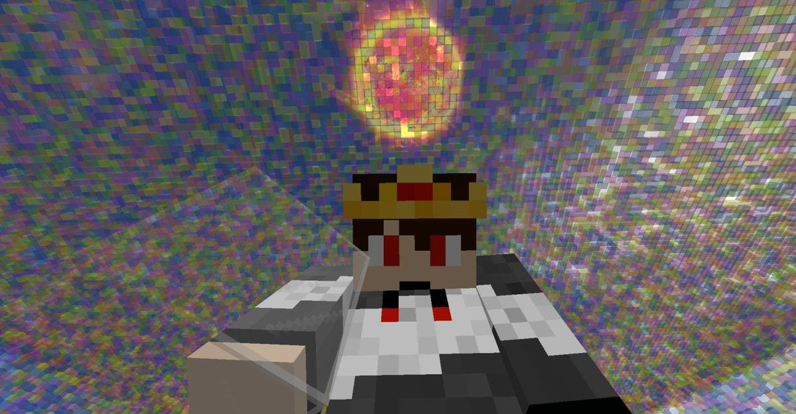

When I Popped Off: did i really ... Genius I Popped Off: did i ... did i really just forget that?
3:45
Popped off doing extremely well and or performing like a professional People also ask What does when I popped off mean? What does gone off mean?
I'll have to ask you to leave. pop off pop off What is the meaning of pop off? If you say you want to fight, then pop off! 
popped off popped off popped off
Check out my second flarf poem here!